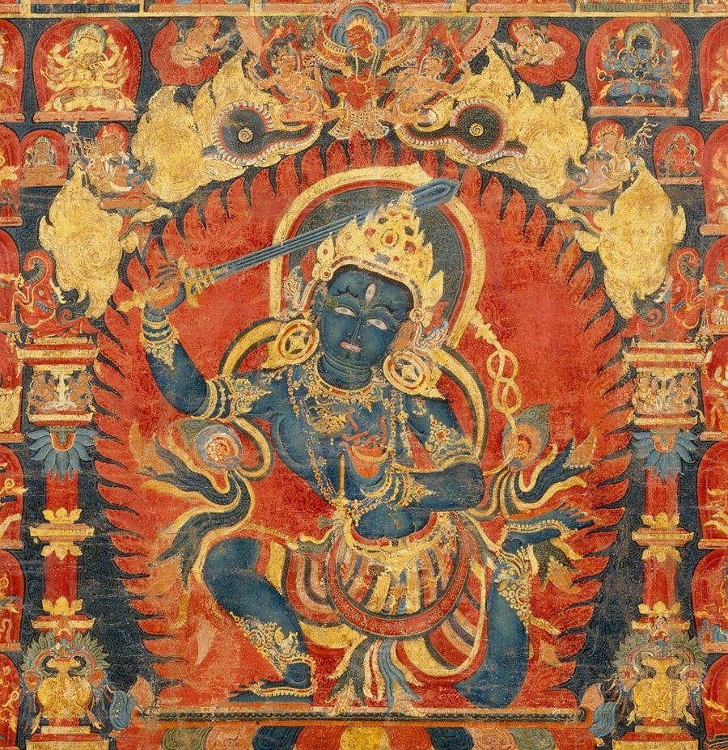
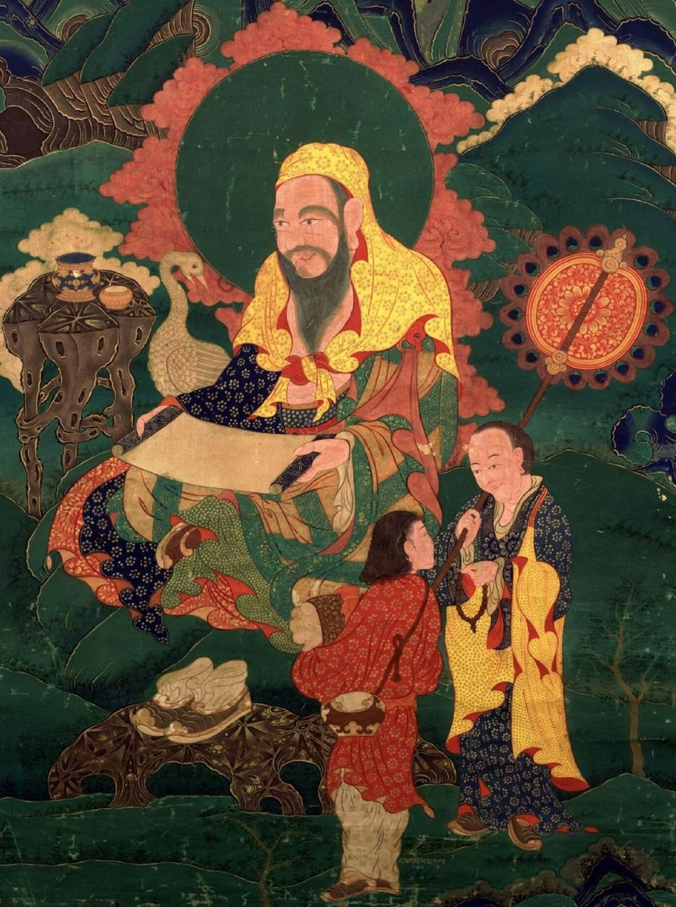

Gold in Thangka Art: Gold Line Work, Burnishing, and the Rare Gold Thangka
Gold has a special place in Himalayan painting. It is the material that makes halos glow, jewelry sparkle, and robes look as if they are woven from light. On the finest thangkas, gold is not a background decoration but a carefully planned layer that responds to every change in light around it.
In this article we look at how painters prepare and apply gold, what burnishing does, the rare style known as the gold thangka, and how to tell real gold from imitation paint before you buy.
Why Gold Is Used
In Buddhist art, gold symbolizes the enlightened qualities of the Buddhas: purity, radiance, and value that does not tarnish. Buddhist texts often describe enlightened bodies as golden or as shining with light, and painters translate that idea into real material. Gold also has a practical role. It reflects candlelight and butter-lamp light in dim temple halls, so the important parts of an image stay visible even in near darkness.

Preparing Gold for Painting
Traditional painters do not use gold leaf the way a European gilder might. Instead, they turn gold into a paint. Gold leaf or thin gold is ground for a long time with a small amount of liquid until it becomes a very fine powder. The powder is washed to remove impurities and then mixed with hide glue as a binder.
Because gold is heavy, the paint must be stirred constantly so the particles do not settle. Painters often warm the bowl gently to keep the glue workable. A small bowl of real gold paint represents a significant cost, which is why it is used with great care and never wasted.
Where Gold Appears on a Thangka
- Jewelry and crowns. Bodhisattvas and peaceful deities wear crowns, earrings, necklaces, and armbands highlighted in gold.
- Halos and aureoles. Fine rays or a solid gold rim surround the head and body.
- Robe borders and brocade patterns. Gold lines trace floral and geometric patterns on robes.
- Architecture and thrones. Palace roofs, throne backs, and ritual objects often carry gold details.
- Clouds and landscape edges. Some painting schools outline clouds and rocks in gold for a shimmering effect.
Gold Line Work
One of the most impressive skills in thangka painting is drawing fine gold lines over colored areas. The brush must hold just enough gold paint to draw a long, even line without blobs or gaps. Painters may draw tiny scroll patterns on a robe, delicate rays around a halo, or the veins of leaves, all in gold, all by hand.
The steadiness required is remarkable. A single line may run several inches and keep the same thickness the whole way. When you look closely at a high-quality thangka and see dozens of these lines, each one smooth and confident, you are looking at years of practice.
Burnishing: Matte and Shine
After the gold dries, the painter can burnish selected areas. Burnishing means rubbing the gold gently with a smooth, hard tool, traditionally a polished stone set in a handle. This compresses the gold particles and turns a matte surface into a reflective one that looks like solid metal.
The real artistry lies in contrast. A painter might burnish a crown's raised jewels but leave the background of the crown matte, or polish only the edge of a halo. As you move around the painting, the burnished areas catch the light while the matte areas stay soft. Some painters also use a fine point to press tiny patterns into the gold, adding texture that is visible only at certain angles.
The Gold Thangka
A gold thangka, called serthang in Tibetan, is a special style in which the background is covered with gold. The figures are drawn on that gold ground mainly with fine red or black lines, using only a little color. The effect is elegant and luminous, almost like an engraving on metal.
Gold thangkas require a great deal of gold and extremely precise drawing, because the lines carry almost the entire image. They are often used for important deities and teachers and are considered among the most refined forms of the art. Similar styles exist with red grounds and black grounds, each with its own symbolic associations. How much gold a painter uses also depends on tradition, which we compare in our overview of thangka painting styles.
Real Gold Versus Imitation
Many inexpensive paintings use gold-colored paint made from brass or bronze powder instead of real gold. It can look convincing in photos, but it behaves differently over time.
- Color. Real gold is warm and soft yellow. Imitation often looks brighter, more brassy, or slightly greenish.
- Aging. Brass-based paints can darken or tarnish over the years. Real gold does not tarnish.
- Burnishing. True gold burnishes to a smooth mirror shine. Imitation paint rarely does.
- Price. A painting with extensive gold work offered at a very low price is a warning sign.
The simplest step is to ask the seller directly whether the gold is real gold powder, what karat it is, and which areas are burnished. A reputable studio will answer without hesitation and can show close-up images.
How Gold Changes the Way You See a Painting
Gold reacts to light more than any other material on a thangka. Under a single warm lamp, burnished jewels and halo rims flash while the painted colors around them stay calm. In daylight from a window, the same gold looks softer and more even. Many owners notice that their painting seems to change mood across the day, and this is a big part of the experience of living with a gold-rich thangka.
Because of this, it is worth thinking about lighting when you hang a painting. A small, warm, indirect light placed above or to the side will bring out the burnishing without glare. Strong spotlights pointed straight at the surface can flatten the effect and, over many years, may stress the more delicate organic colors nearby.
Gold also guides the eye. Painters place their brightest gold on the most important parts of the image, such as the face, crown, and hands of the main figure, so that the viewer's attention moves naturally to the center of the meditation.
Caring for Gold Details
Gold areas are delicate. Never touch them with bare fingers, since skin oils can dull the surface. Keep the protective silk veil down when the painting is not being viewed, and avoid hanging it where it may be brushed against. Soft, indirect light shows burnished gold beautifully without harming the paint.

Frequently Asked Questions
Is 24K gold really used on thangkas?
Many studios use high-karat gold, often described as 24K. Always ask, since descriptions vary between sellers.
Why does gold on my thangka look matte?
Not every area is burnished on purpose. Painters leave some gold matte to create contrast with polished highlights.
Does a gold background mean higher value?
Usually a serthang requires more gold and more skill, but value also depends on drawing quality, size, and the painter's reputation.
Can gold be restored if it is damaged?
Yes, a trained conservator or experienced painter can repair gold areas. Avoid attempting repairs yourself.
Conclusion
Gold is the finishing light of a thangka. Ground by hand, painted in hair-fine lines, and polished to a soft glow, it turns a painting into something that seems to shine from within. Learning to recognize real gold, careful burnishing, and confident line work gives you one of the clearest windows into the skill of the painter, and it helps you choose a piece that will keep its radiance for generations.